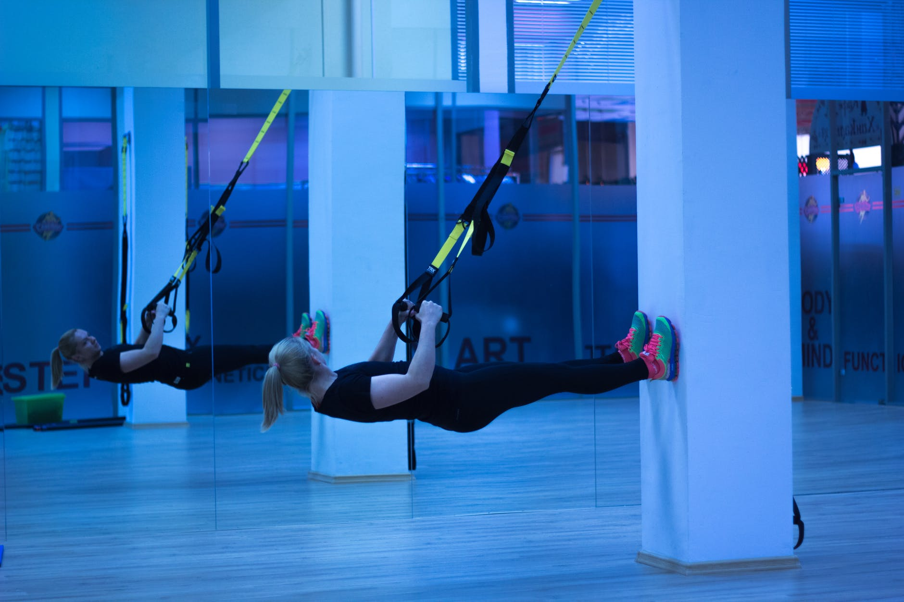

<!--
  Generated template for the UserPage page.

  See http://ionicframework.com/docs/components/#navigation for more info on
  Ionic pages and navigation.
-->
<ion-header>

  <ion-toolbar color="darkfitness">
    <button ion-button menuToggle>
        <ion-icon ios="md-contact" md="md-contact"></ion-icon>
    </button>
    <ion-title class="title-custom" text-center>Events</ion-title>
    <ion-buttons ion-button end>
      <button ion-button (click)="showNotifications()">
        <ion-icon ios="ios-notifications" md="ios-notifications"></ion-icon>
        <ion-badge item-end>3</ion-badge>
      </button>
    </ion-buttons>

  </ion-toolbar>

</ion-header>


<ion-content class="card-background-page" no-padding>
  <div id="step1" *ngIf='step1'></div>
    <ion-card>
        
        <div class="card-title">São Paulo</div>
        <div class="card-subtitle">41 Friends going</div>
      </ion-card>

      <ion-card> 
        
        <div class="card-title">Amsterdam</div>
        <div class="card-subtitle">64 Friends going</div>
      </ion-card>

      <ion-card>
        
        <div class="card-title">San Francisco</div>
        <div class="card-subtitle">72 Friends going</div>
      </ion-card>

      <ion-card>
        
        <div class="card-title">Madison</div>
        <div class="card-subtitle">28 Friends going</div>
      </ion-card>

</ion-content>
